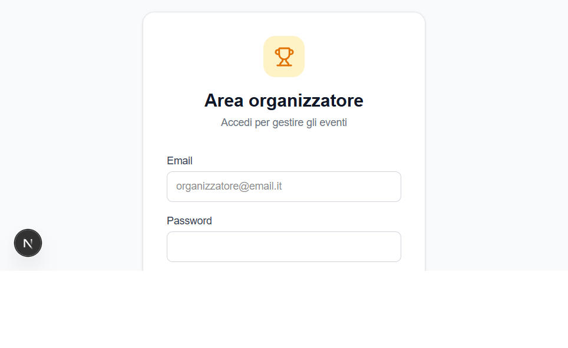
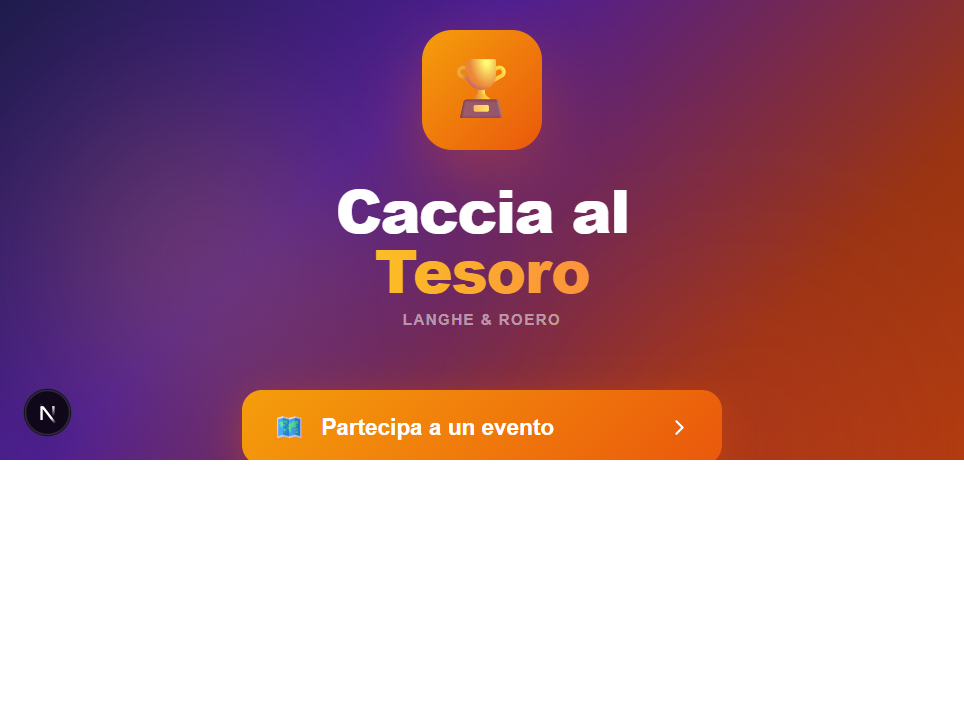
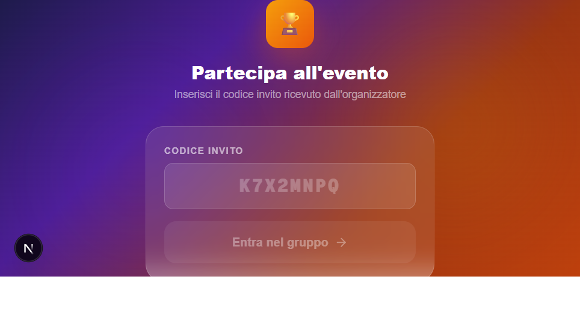
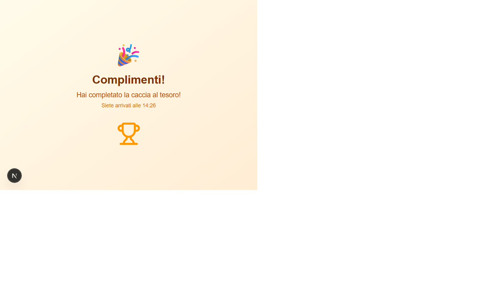
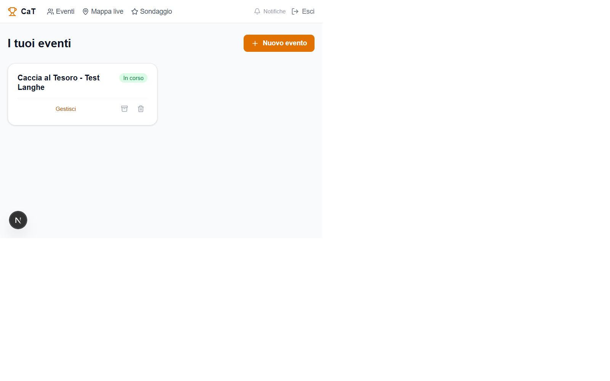
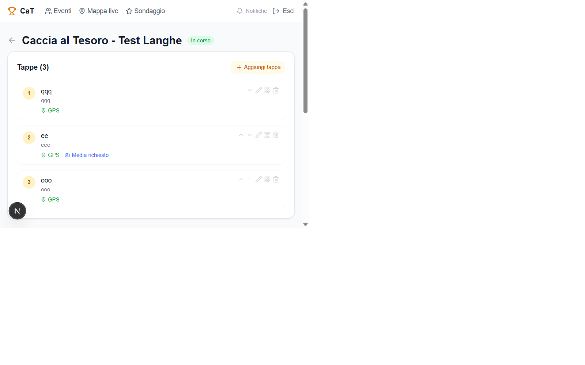
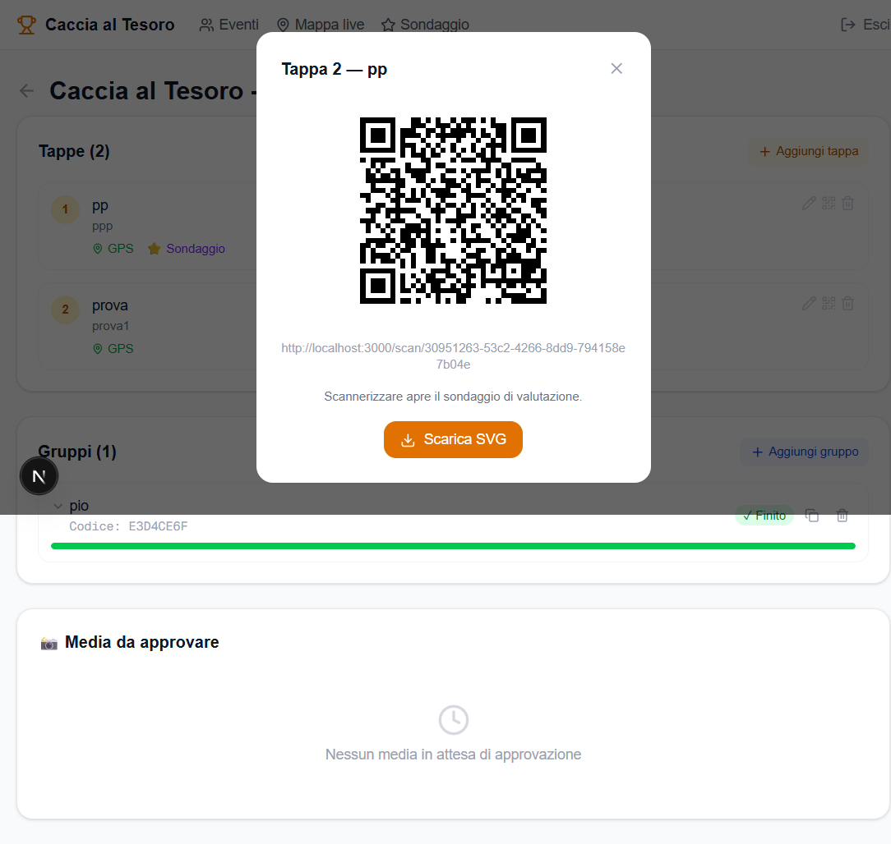
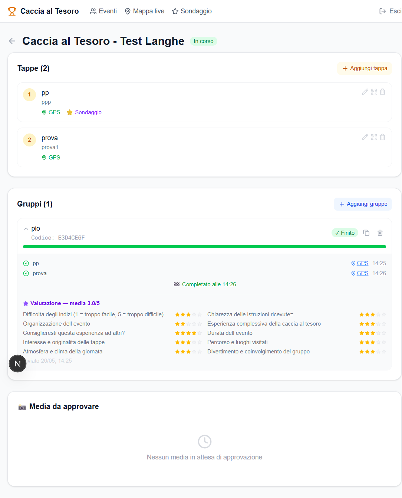
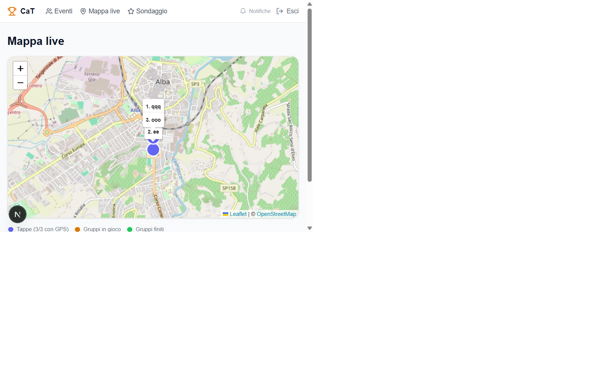
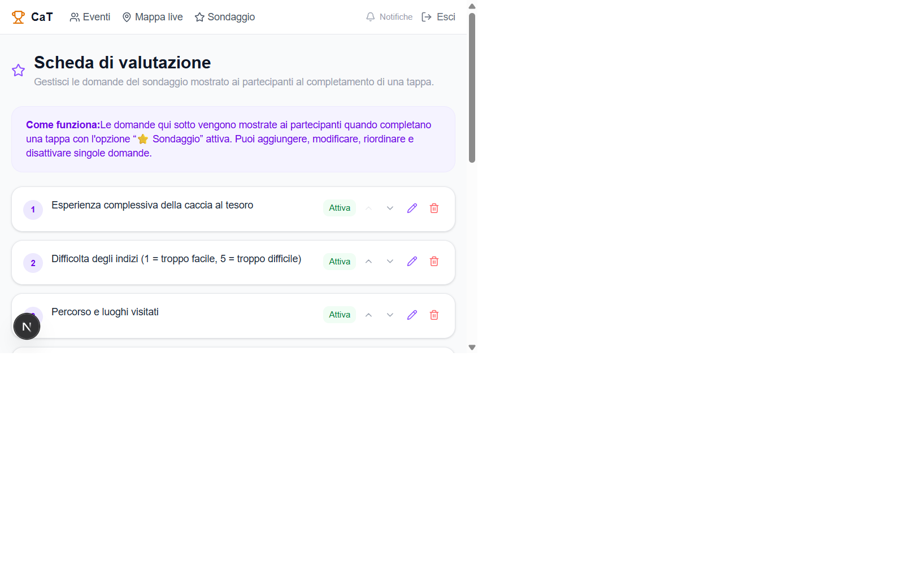

Manuale d'uso completo
Guida per partecipanti e organizzatori — Langhe & Roero
Caccia al Tesoro è una Progressive Web App (PWA): non è distribuita tramite App Store o Play Store, ma si installa direttamente dal browser in pochi secondi. Una volta installata si comporta come una normale app nativa: icona nella home screen, avvio a schermo intero e ricezione di notifiche push.

Schermata di accesso area organizzatore
La schermata iniziale presenta due percorsi distinti:
Per i partecipanti che devono entrare in un gruppo ed iniziare a giocare.
Per gli admin che gestiscono eventi, tappe e gruppi.
In basso sono indicati i tre punti di forza dell'app: GPS live, Prove foto/video, Mappa interattiva.
Toccando "Partecipa a un evento", il partecipante viene portato alla schermata di inserimento del codice invito.

Home page dell'app (design attuale)
Nella schermata "Partecipa all'evento" inserire il codice invito ricevuto dall'organizzatore (es. K7X2MNPQ).
Il pulsante Entra nel gruppo → si attiva non appena il campo non è vuoto. Premendolo l'app verifica il codice sul server e, se valido, salva il gruppo in memoria locale e reindirizza automaticamente alla schermata di gioco.
Se il codice non esiste o appartiene a un evento non attivo, viene mostrato un messaggio di errore.
/join/CODICE che porta direttamente alla schermata di gioco.
Schermata inserimento codice invito
La schermata di gioco è il centro dell'esperienza partecipante. Si aggiorna in tempo reale grazie alle subscription Realtime di Supabase: quando l'admin sblocca una tappa o cambia lo stato, la schermata si aggiorna automaticamente senza ricaricare la pagina.
Numero progressivo, titolo e indizio della tappa da raggiungere. Visibili solo dopo l'accesso al gruppo.
Barra di progresso che mostra quante tappe completate sul totale (es. 2/5).
Testo personalizzato dall'admin, mostrato ai partecipanti dopo aver completato la tappa precedente.
Stato in tempo reale: Attivo (verde), Negato (rosso) o In attesa (giallo).
Apre lo scanner integrato della fotocamera. Disabilitato se la tappa richiede GPS e il dispositivo non è nel raggio.
Se il QR fisico è danneggiato o illeggibile, invia una segnalazione all'admin per l'avanzamento manuale.
All'apertura della schermata di gioco, il browser chiede il permesso di accedere alla posizione GPS. Questo serve a due scopi:
Se una tappa ha coordinate GPS configurate, il pulsante QR è disabilitato finché il dispositivo non è fisicamente entro il raggio impostato (es. 200 m dal punto). Garantisce che il gruppo raggiunga davvero il luogo fisico.
La posizione rilevata viene inviata al server e mostrata sulla mappa dell'admin in tempo reale. L'organizzatore vede dove si trovano tutti i gruppi.
Flusso di autorizzazione:
group_positions.Alcune tappe richiedono l'invio di una foto o video come prova. Il flag "Media richiesto" è visibile nella lista tappe in area admin. Dopo la scansione del QR:
L'admin riceve una notifica push ("Nuovo media da approvare") e vede il file nella sezione Media da approvare in fondo alla pagina evento.
Se una tappa ha l'opzione "Sondaggio" attiva (stella ⭐ visibile nella lista tappe), dopo la scansione QR appare un modulo con le domande configurate dall'admin.
Tipi di domanda disponibili:
Il sondaggio deve essere completato prima di avanzare. Le risposte sono visibili all'admin nel dettaglio gruppo (sezione 2.9).
Ogni gruppo ha una chat in tempo reale con l'organizzatore. Il widget di chat è accessibile dalla schermata di gioco tramite l'icona a fumetto 💬 in basso a destra.
Funzionalità della chat:
La chat rimane aperta per tutta la durata dell'evento. Utile per:
Ogni messaggio inviato dal gruppo è etichettato group; quelli dell'admin admin. Il canale è uno per gruppo: la conversazione è privata tra il gruppo e l'organizzatore.
L'admin risponde dalla propria interfaccia (sezione 3.4).

Schermata di completamento percorso
Al completamento dell'ultima tappa viene mostrata la schermata "Complimenti! 🎉" con:
L'organizzatore riceve immediatamente una notifica push con il nome del gruppo e l'ora di arrivo.
Il gruppo viene segnato come ✓ Finito nella dashboard admin.
Navigare a /admin. Se non autenticati, si viene reindirizzati automaticamente a /admin/login.
Inserire Email e Password dell'account organizzatore Supabase. La sessione è mantenuta automaticamente tramite cookie sicuro (refresh token). Non è necessario fare login ad ogni visita.
Per uscire: pulsante → Esci in alto a destra nella barra di navigazione.
Schermata di accesso admin
Dopo il login si accede alla dashboard principale. La barra di navigazione in cima contiene:
La lista eventi mostra card con: nome, stato (Bozza / In corso / Completato) e pulsanti di azione.
Azioni su ogni card evento:

Dashboard eventi admin con menu di navigazione
Cliccare + Nuovo evento in alto a destra nella dashboard. Si apre un form con:
* — obbligatorio, es. "Caccia al Tesoro - Alba 2026"Premere Crea evento. L'evento viene creato in stato Bozza e si viene reindirizzati alla pagina dettaglio.
La pagina dettaglio è divisa in tre aree principali:
Lista ordinata delle tappe con titolo, indizio, badge GPS/Media/Sondaggio. Pulsanti per aggiungere, modificare, riordinare, vedere il QR ed eliminare ogni tappa.
Lista gruppi con barra di avanzamento, stato, codice invito e azioni di gestione. Si espandono per vedere dettagli.
File caricati dai gruppi nelle tappe con media richiesto. Anteprima, nome gruppo e tappa.

Pagina dettaglio evento: sezione Tappe
Cliccare + Aggiungi tappa nella sezione Tappe. Si apre un modal con i seguenti campi:
* — nome della tappa (visibile all'admin)* — testo mostrato ai partecipanti nella schermata di gioco44.6943) o gradi (44 41 41.3 N)Per modificare una tappa esistente: cliccare ✏️ nella riga della tappa.
Per eliminare: cliccare 🗑️ (richiede conferma). Attenzione: si eliminano anche le submission e i feedback associati.
Cliccare l'icona ⊞ QR nella riga di una tappa per aprire il modal con il codice da stampare. Il modal mostra:
/scan/[token-univoco])Pulsanti disponibili:
qr-tappa-N-Titolo.svg ed è stampabile in qualsiasi dimensione senza perdita di qualità.
Modal QR con pulsanti Rigenera e Scarica SVG
Ogni tappa ha due pulsanti freccia ↑ ↓ nella sua riga. Cliccarli sposta la tappa di una posizione verso l'alto o verso il basso. Il riordino è immediato e salvato nel database.
La sezione Gruppi nella pagina dettaglio evento mostra ogni gruppo come una card con:
Nome gruppo, codice invito con pulsante copia 📋, badge stato (In corso / Finito / In attesa).
Indicatore visuale delle tappe completate sul totale. Verde per i gruppi finiti.
Se il gruppo ha segnalato un problema QR, il bordo della card diventa rosso. Notifica push inviata all'admin.
Aggiungere un gruppo: cliccare + Aggiungi gruppo. Inserire il nome del gruppo. Il sistema genera automaticamente un codice invito univoco di 8 caratteri.
Eliminare un gruppo: pulsante 🗑️ sulla card (richiede conferma). Elimina il gruppo e tutti i suoi dati (posizioni GPS, submission, feedback, messaggi).

Sezione gruppi e media da approvare
Cliccare sulla freccia ▼ accanto al nome del gruppo per espandere il dettaglio con:
Avanzamento manuale ⏭: sblocca il gruppo alla tappa successiva senza che scansioni il QR. Utile quando:
La sezione 📸 Media da approvare in fondo alla pagina dettaglio evento mostra tutti i file caricati dai gruppi nelle tappe con Media richiesto.
Per ogni file viene mostrato:
Accessibile da 📍 Mappa live nella barra di navigazione. Mostra su mappa interattiva (OpenStreetMap) le posizioni GPS in tempo reale di tutti i gruppi per gli eventi attivi.
Legenda marker sulla mappa:
Cliccando su un marker gruppo si vede un popup con: nome del gruppo, tappa corrente e ultimo aggiornamento GPS.
Sotto la mappa, il pannello gruppi lista tutti i gruppi con lo stato GPS: Attivo, Negato, Non disponibile.

Mappa live con posizioni tappe (blu) e gruppi
Accessibile da ⭐ Sondaggio nella barra di navigazione. Permette di configurare le domande mostrate nelle tappe con l'opzione Sondaggio attiva.
Azioni disponibili per ogni domanda:
Per aggiungere una nuova domanda: pulsante + Aggiungi domanda in fondo alla lista. Inserire il testo e salvare.

Scheda di valutazione — gestione domande
Cliccare 🔔 Notifiche in alto a destra nella barra admin per abilitare le notifiche push sul dispositivo corrente.
Nella pagina dettaglio evento, ogni gruppo nella lista mostra un'icona 💬 per aprire il widget di chat dedicato al gruppo.
Il widget di chat admin permette di:
I messaggi inviati dall'admin sono etichettati admin e appaiono ai partecipanti nella chat di gruppo (sezione 1.7).
Gruppo → Admin:
Riepilogo del flusso operativo dall'inizio alla fine di un evento: